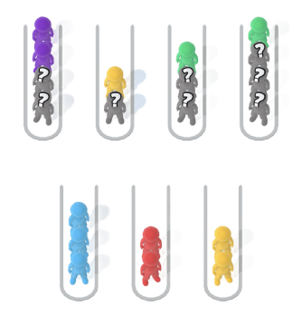

<section id="about-the-game">
  <div class="container about-the-game-container background">
    <div class="about-background-img"></div>
    <h2 class="about-the-game-title title">About the Game</h2>
    <div class="about-the-game-text">
      <p class="part-one">
        Sort In Line: Color Puzzle is a fun and relaxing puzzle game that tests
        your organizational skills and precision. The goal is to sort colorful
        objects into their respective lines, matching colors to clear each
        level.
      </p>

      <p class="part-two">
        With hundreds of puzzles and visually pleasing graphics, this game
        offers a satisfying and immersive experience for players of all ages.
        Perfect for a quick mental challenge or a calming break, Sort In Line:
        Color Puzzle is sure to keep you engaged and relaxed.
      </p>
    </div>
    <div class="absolut">
      <picture class="about-picture">
        <source
          srcset="
            /img/about-the-game/about-desk@1x.png 1x,
            /img/about-the-game/about-desk@2x.png 2x
          "
          media="(min-width: 1200px)"
        />
        <source
          srcset="
            /img/about-the-game/about-mob@1x.png 1x,
            /img/about-the-game/about-mob@2x.png 2x
          "
          media="(max-width: 1200px)"
        />
        
      </picture>
    </div>
  </div>
</section>
